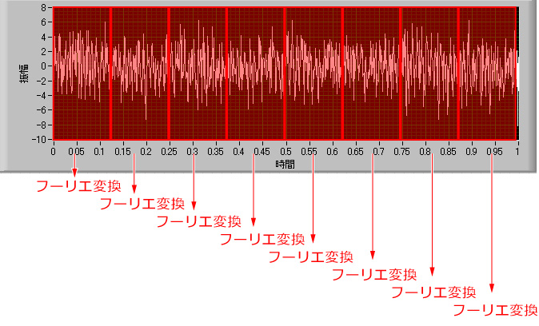
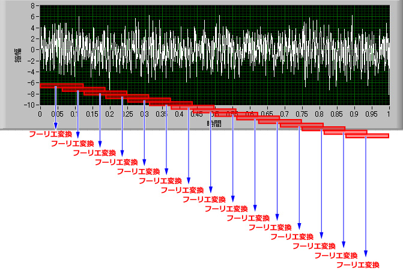
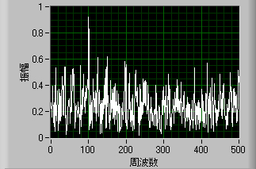
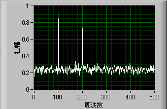

このように，波形をウィンドウに分割して，それぞれをフーリエ変換します．
そして，これらフーリエ変化した波形を加算平均するのです．
しかし，実際には，もう少し細かく行っています．

このように，ウィンドウを半分ずつずらして，それぞれについてフーリエ変換を行い，加算平均を行っています．
この理由は，前ページにあった，窓関数に由来するものです．
窓関数は，端のデータの振幅を小さくしています．
従って，端の情報は中央の情報に比べて，重みが低くなってしまいます．
加算平均のウィンドウを半分ずつずらすことにより，できるだけ均等に重み付けしよう，というのが目的です．
しかし，この手法はあくまで私の経験値であって，理論的に正しいかどうかはわかりません．
では，実際の加算平均の効果を見てみましょう．
まずは加算平均していない波形でのフーリエ変換．

前ページに示したのと一緒です．
次に，10回加算平均をかけたものです．

このように，１００，２００Hzのところにきれいなピークが浮かび上がってきました．
さらに，ベースラインがとてもきれいになり，この値から本来のノイズ成分の大きさを得ることができます．
簡単なプログラムを用意しましたので，遊んでみてください．
正弦波１，正弦波２，ノイズ
を適当に設定し，
回数
が加算平均の回数です．
フーリエ変換の長さ
は加算平均のウィンドウの大きさです．
ダウンロードは下のファイルを．
FFT-average.vi
次に，いくつかのフーリエ変換の注意点を．